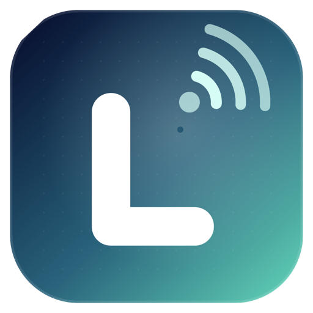
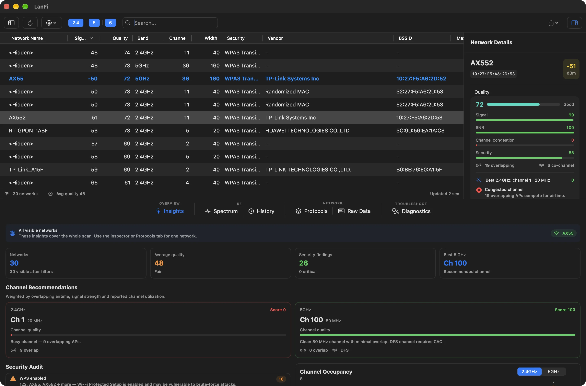
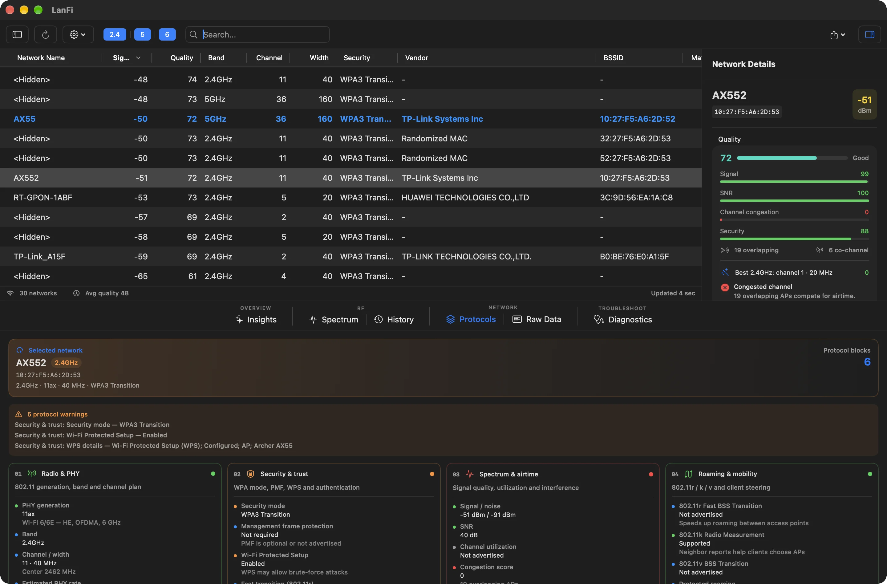
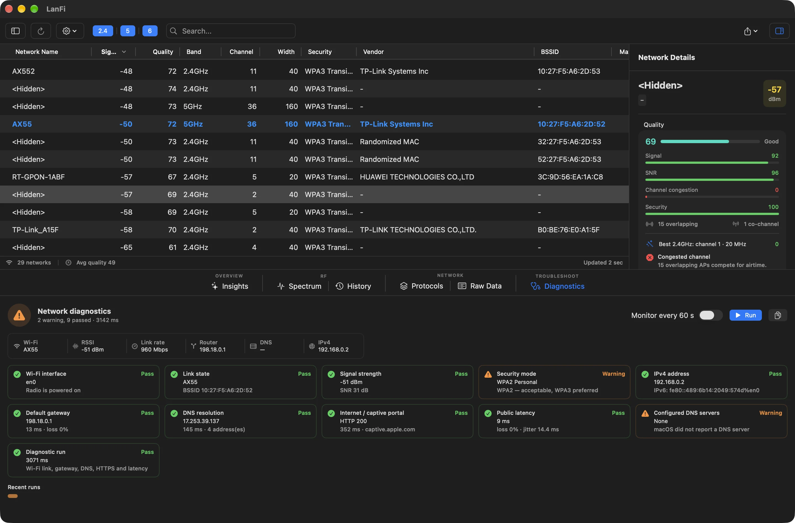
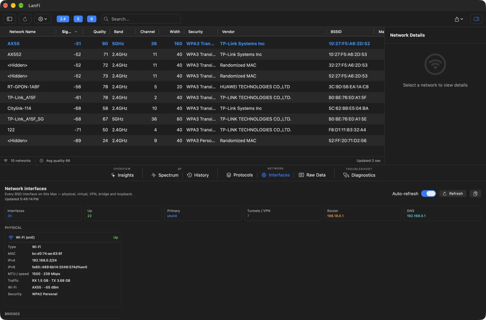
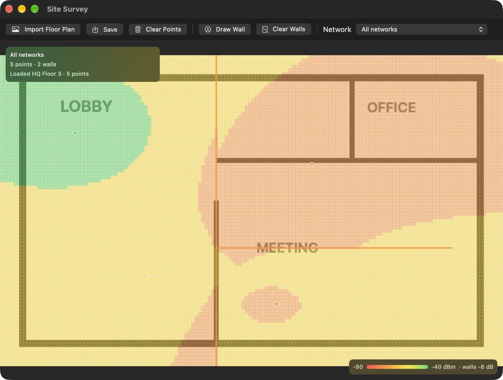

Оценка 0–100
Сигнал, SNR, перекрытие каналов, утилизация и безопасность складываются в одну цифру. Недостающие метрики убираются, а оставшиеся веса пересчитываются — оценка остаётся честной.

Нативный анализатор Wi‑Fi для Mac на CoreWLAN. Оценивает качество каждой сети, подсказывает свободный канал и проверяет безопасность — без Electron, аккаунтов и телеметрии.
При первом запуске понадобится доступ к геолокации.

Анализ
Каждая сеть получает оценку от 0 до 100 по сигналу, шуму, загруженности эфира и безопасности. LanFi сам решает, какие веса применить, и объясняет, что именно тянет сеть вниз.
Сигнал, SNR, перекрытие каналов, утилизация и безопасность складываются в одну цифру. Недостающие метрики убираются, а оставшиеся веса пересчитываются — оценка остаётся честной.
Для каждого диапазона — ранжированный список каналов, включая 20, 40 и 80 МГц. Перекрытие, загруженность и DFS учитываются, чтобы совет работал в реальном эфире.
Аудит
Открытые сети, WEP, устаревший WPA, WPS и отсутствие защиты управляющих кадров получают уровень серьёзности и подсказку по исправлению. Блоки протоколов показывают PHY, безопасность, роуминг и эфир по каждой сети — без чтения сырых кадров.

Диагностика
LanFi проверяет Wi‑Fi, адреса, шлюз, DNS, captive portal, HTTPS и задержку до интернета. Смотрит все интерфейсы Mac, а не только беспроводной, и строит тепловую карту помещения по замерам.
Ссылка, шлюз, DNS, перехват портала, HTTPS и задержка — с понятным «прошло» или «внимание» и историей мониторинга каждые 60 секунд.

Ethernet, VPN, мосты и петля: адреса, MTU, скорость, трафик и состояние обновляются в одном списке — удобно, когда проблема не в радио.

Импортируйте план, отметьте точки замера RSSI и расставьте стены. Интерполяция покажет, где сигнал проваливается, а отчёт сохранится в PDF.

Больше возможностей
От нативного интерфейса и офлайн‑базы производителей до CLI и удалённых сенсоров — каждая деталь помогает понять сеть быстрее.
SwiftUI и AppKit без Electron: таблица на NSTableView, графики на Swift Charts и Canvas, сканирование вне главного потока.
CWWiFiClient и CWNetwork вместо приватных фреймворков и разбора вывода airport.
Ни аналитики, ни аккаунтов, ни облака. Наружу — только проверка обновлений и диагностика по вашему запросу.
Офлайн‑база IEEE и Wireshark с поиском по самому длинному префиксу; рандомизированные MAC распознаются.
Выгрузка скана, синтетический beacon‑pcap для Wireshark и разбор готовых pcap/pcapng офлайн.
Запись трафика в реальном времени прямо из приложения — готовый файл открывается в Wireshark.
Качество текущей связи и быстрый доступ к сканированию прямо из строки меню.
Сохраняйте сессии, псевдонимы, теги и заметки по сетям — всё остаётся только на вашем Mac.
Подписанный appcast в GitHub Releases: обновление без ручной переустановки.
lanfi-cli summary scan.json и ссылки вида lanfi://tab/protocols — для скриптов и автоматизации.
Скан с другого Mac по SSH с авторизованным ключом — для точек, куда не дотянуться.
Английский, немецкий, французский, русский и упрощённый китайский интерфейс.
Интерфейс следует системной теме, а графики и таблица остаются читаемыми в обеих.
Скачайте образ или поставьте через Homebrew — аккаунт не нужен, телеметрии нет. Сборки ad‑hoc, поэтому при первом запуске может понадобиться «Открыть» из контекстного меню.
Скачайте, перенесите LanFi в «Программы» и разрешите доступ к геолокации — без него macOS скрывает имена сетей.
Скачать .dmgЕсли Homebrew уже установлен — три команды в терминале.
brew tap zheltukheen/lanfi \
https://github.com/zheltukheen/lanfi
brew trust zheltukheen/lanfi
brew install --cask lanfiТребуется macOS 13+ · Apple Silicon и Intel · FSL‑1.1‑ALv2